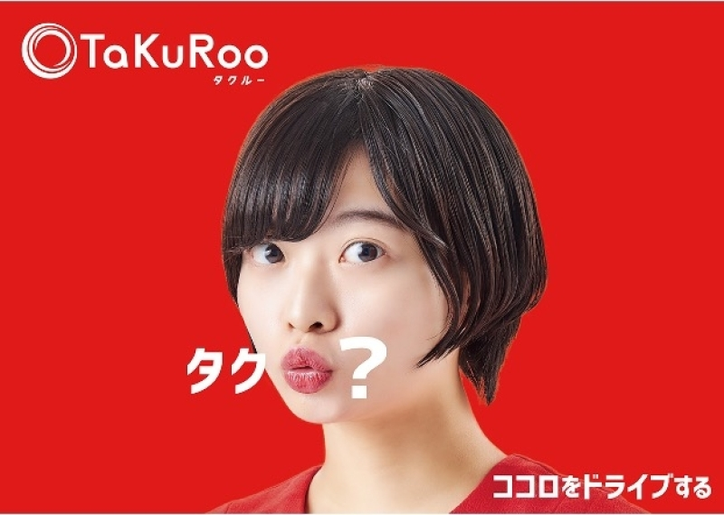
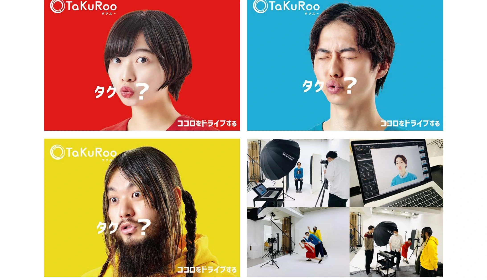

観光
TAKURoo


PROJECT INFORMATION
公式サイトを見る ↗（新しいタブで開く）「TAKURoo」の企画・設計、デザイン、Webのフロントエンド、イラストを担当した実績です。
01 / 背景とテーマ
輪郭を与える
熊本のタクシー会社10社が合併して生まれた「TaKuRoo」。think garbageが提唱する「新たな移動文化の創造」を掲げたプロジェクトです。合併は、内側から見れば経営の話ですが、街の人から見れば「知っている車が、別の名前になる」出来事でもあります。だからブランドの軸は、効率ではなく文化の側に置きました。
02 / SCHEMAの担当範囲
全体を整える
SCHEMAは設計・企画からデザイン、フロントエンド、イラストまでを担当。ロゴは「タクる」と言うときの「る」の口の形からつくりました。すでに日常で使われていることばを起点にすることで、新しい名前でも、前から知っていたような顔ができる。乗る人と運転する人、その両方が毎日目にするものとして組み立てています。
03 / 取り組みの視点
枠組みをひらく
掲げたことばは「ココロをドライブする」。移動を速く安くするだけでなく、乗っているあいだの時間そのものを楽しめるものにする。交通インフラを、その土地の回り方を提案するメディアとしてひらいた取り組みです。